功能
Alcedo Studio 0.3.6 的全部功能，按领域列出。
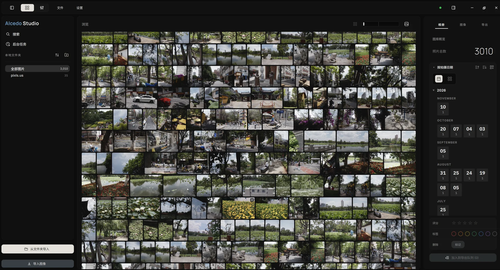
RAW 解码#
Alcedo Studio 使用项目维护的 LibRaw 分支读取 RAW 文件。
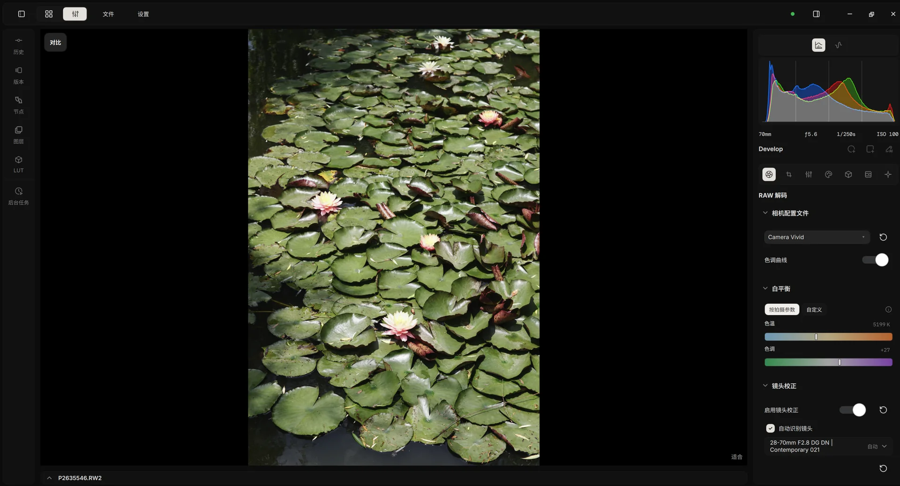
- 相机
- Canon、Nikon、Sony、Fujifilm、Panasonic、OM System、Leica、Hasselblad、Phase One（包括 1.5 亿像素的 IQ4）、Pentax、Sigma，以及手机和无人机拍摄的 DNG。详见支持的相机和支持的格式。
- Nikon HE
- Z 8、Z 9、Z 6 III 和 Z 50 II 拍摄的高效率（HE）NEF 文件。
- 相机色彩
- 相机色彩矩阵，部分机型使用 rawtoaces-data 的光谱数据。DNG 文件使用自身的 HueSatMap 和 LookTable。
- DCP 相机配置文件0.3.6
- 在“设置 > LUT 和色彩管理”中指定 DCP 文件夹。RAW 面板的“相机配置文件”部分为当前相机匹配文件夹中的配置文件，所选配置文件的色调曲线会载入色调曲线工具。DCP 文件需要自行准备，例如 Lightroom Classic 安装目录中的 CameraProfiles 文件夹，或 Adobe DNG Converter 中的配置文件。处理流程与 Adobe Camera Raw 和机内处理不同，结果可能与它们有差别。
- 去马赛克
- Bayer 传感器默认使用 RCD。X-Trans 传感器默认使用 Neural Engine，Bayer 文件也可以使用。Neural Engine 是从 DemosaicNet 蒸馏而来、在 GPU 上运行的精简神经网络。
- 高光重建
- Inpaint Opposed，改编自 darktable 和 RawTherapee。
- 镜头校正
- 使用 Lensfun 配置文件校正畸变、横向色差和暗角，采用 Lanczos-3 重采样。自动模式可以找到 Fujifilm GFX100RF、Ricoh GR III 和 Ricoh GR IIIx 的内置镜头。
- 其他图片文件
- JPEG、PNG、TIFF 和 OpenEXR。内嵌的色彩配置文件把图像转换到 ACES。OpenEXR、PQ 和 HLG 图像标记为 HDR。
场景参考色彩#
从解码到最后一步，图像始终是 32 位浮点的场景参考数据，最后由显示渲染变换为你的显示器形成画面。
- 数值精度
- 所有步骤均为 32 位浮点。
- 调色空间
- ACEScc，AP1 原色。
- 显示渲染变换
- ACES 2.0、OpenDRT 或胶片印片。使用 ACES 2.0 和 OpenDRT 时，可以设置目标色彩空间、传递函数和峰值亮度。
- 输出目标
- Rec.709、Display P3 和 Rec.2020，支持 PQ 和 HLG。
- HDR 预览
- 在配备 HDR 显示屏的 Mac 上，编辑器直接显示 HDR 效果（EDR）。
- Windows 色彩管理0.3.6
- 编辑器、对比视图、LUT 预览，以及图库、胶片条和搜索中的缩略图，按所在显示器的 ICC 配置文件转换显示。“设置 > LUT 和色彩管理”显示当前使用的配置文件。
- 对比度
- 作用于 OkLab 亮度的 S 曲线，保持亮度和色相不变。
节点式编辑#
每张照片的编辑都是一张节点图。每个 Color Grade 节点都有自己的调整和自己的蒙版。
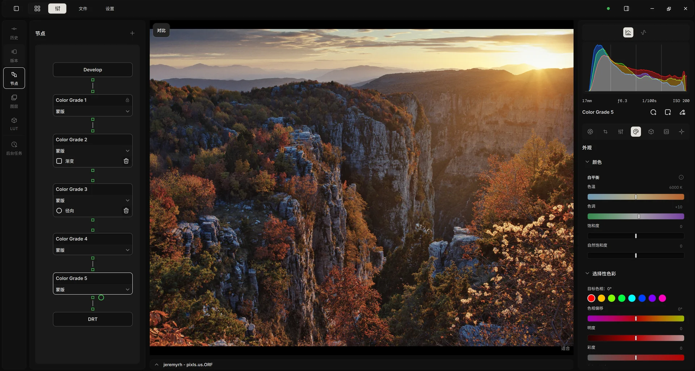
- 节点结构
- Develop → 任意数量的 Color Grade 节点 → Display Transform。
- Develop
- RAW 解码、白平衡、镜头校正和裁剪，输出场景参考图像。
- Color Grade
- 影调、色调曲线、色轮、可选颜色、细节和蒙版。带蒙版的 Color Grade 只改变蒙版内的区域。
- Display Transform
- ACES 2.0、OpenDRT 或胶片印片。
- 节点编辑
- 新增、连接、重命名、多选和删除节点。每次修改都是一条历史记录，并随版本保存。
- 隐藏图层0.3.6
- 点击 Color Grade 图层行上的眼睛按钮可以隐藏该图层，隐藏的图层不参与计算。未连接的 Color Grade 保留在文档中。
- 锁定
- 默认调色图层自动锁定，任意图层都可以手动锁定。
调整工具#
所选节点的调整位于编辑器右侧的面板中。
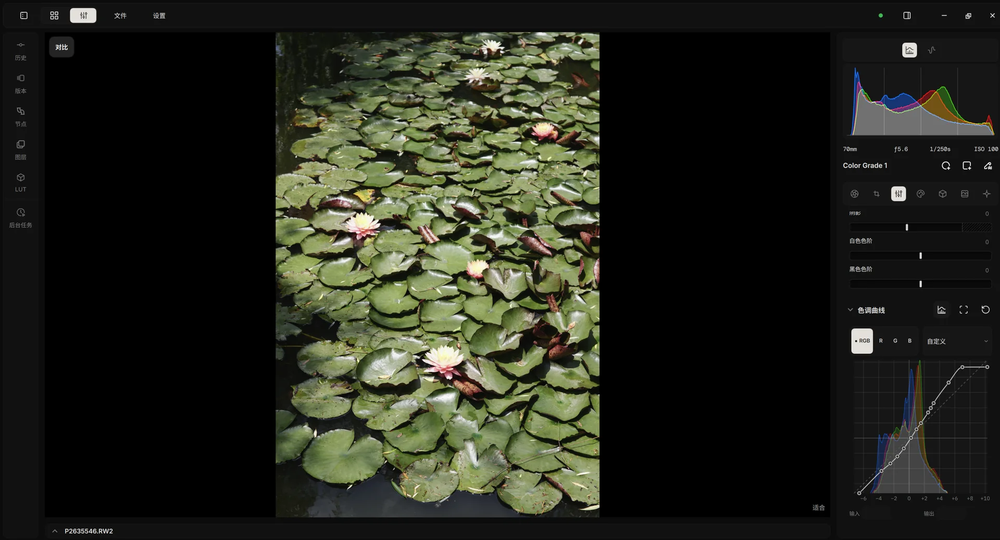
- 影调
- 曝光、对比度、高光、阴影、白色色阶和黑色色阶。高光和阴影使用局部色调映射。
- 影调算法0.3.6
- 阴影提亮保留黑位，大幅提亮时暗部不会发灰，也不会亮过中间调。白色色阶和黑色色阶只作用于中性灰的各自一侧，最多 3 挡。阴影和高光在色调曲线之前计算。
- 滑块0.3.6
- 每个滑块都可以输入数值，双击恢复默认。曝光的拖动范围是 −5 至 +5 EV，输入范围是 −10 至 +10 EV。高光最低可设为 −150，阴影最高可设为 +150。
- 色调曲线0.3.6
- RGB 曲线，以及红、绿、蓝单通道曲线。绘图区显示曲线输入的直方图和以中性灰为起点的曝光挡位。右键删除控制点。
- 曲线预设0.3.6
- 线性、柔和对比度、中等对比度、强对比度、经典数码，以及取样自 Kodak 2383、Velvia 50 和 Ektachrome E100 的曲线。
- 默认影调0.3.6
- 新导入的 RAW 照片使用“经典数码”曲线，它参照 RawTherapee 的默认曲线设计。在“设置 > 默认行为 > RAW 导入”中设置新导入 RAW 照片的曝光、饱和度、曲线预设、显示变换和镜头校正。
- 色轮
- Lift、Gamma 和 Gain 分别调整暗部、中间调和高光，Offset 偏移所有影调。Master 数值以 EV 为单位。
- 可选颜色
- 按色相范围调整颜色。滑轨显示所选色相的实际颜色。
- 细节
- 清晰度和锐化。
- 裁剪与旋转
- 裁剪框就是输出图像。在裁剪框四角外侧拖动即可旋转，旋转时显示更细的参考网格。比例设置随裁剪保存。
蒙版与 AI 蒙版#
一个 Color Grade 节点可以有多个蒙版，它的调整只作用于蒙版之内。
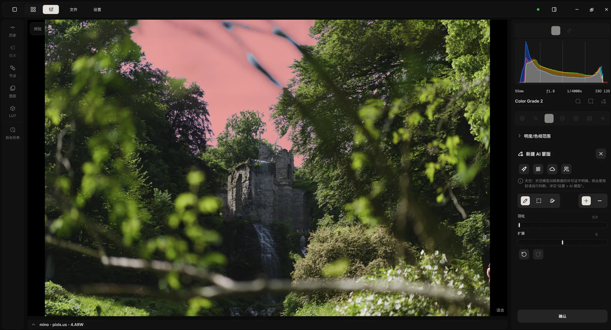
- 蒙版类型
- 线性渐变、径向渐变和 AI 蒙版。
- AI 蒙版
- 一键选择主体、背景、天空或人物，或通过点选、绘制路径或框选选择任意物体。可以添加和减去选区，单独加入或移除人物，调整羽化和扩展。红色叠层显示选区。
- AI 蒙版步骤
- AI 蒙版工具有独立的撤销和重做，点击“确认”后保存为一条历史记录。已保存的 AI 蒙版存放在项目中，渲染时不需要模型。
- 明度/色相范围
- 用明度和色相限制任意蒙版，提供双滑块范围条、数值输入、柔和度和饱和度门槛。
- 显示选区
- 显示蒙版实际覆盖的区域，每个蒙版默认开启。
- 蒙版参数
- 位置、半径、旋转、内外羽化、不透明度和反转。
- 蒙版组
- 蒙版组面板把每个 Color Grade 显示为一组，并显示每个蒙版的缩略图。
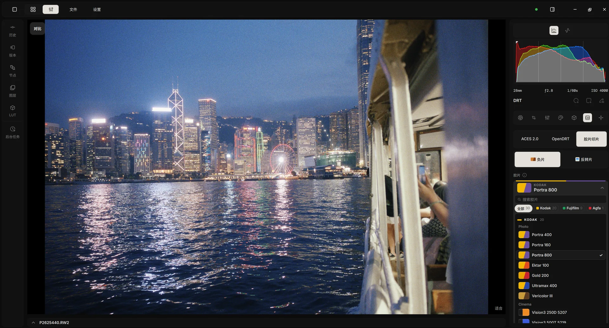
- 原理
- 为每个像素重建光谱，按各感光层的光谱灵敏度计算曝光，加入光扩散和光晕，再按特性曲线和层间抑制完成显影。
- 负片
- 30 款彩色负片：Kodak 20 款、Fujifilm 9 款、Agfa 1 款。
- 反转片
- Fujichrome Velvia 50、Velvia 100、Provia 100F、Astia 100F 和 Kodak Ektachrome E100，以灯箱观看方式呈现。
- 印片
- 任一负片可以印放到 18 种摄影相纸和电影印片胶片之一，例如 Kodak Endura Premier、Kodak Vision 2383 和 Fuji Crystal Archive。Cine Look（Kodak Vision 2383）是单独的选项。输出 Rec. 709 SDR。
- 负片扫描
- 虚拟扫描器读取并反转负片，再由 OpenDRT 形成 SDR 或 HDR 画面。可以调整扫描曝光、对比度、青、品、黄和黑位。“中性”自动校色在缩放和平移时保持全画面的色彩平衡。
- 场景光
- 默认“按拍摄参数”，读取 RAW 白平衡的色温和色调。
- 片幅
- 16mm、35mm 或 70mm。片幅决定颗粒相对画面的大小，较小片幅也会放大光扩散和光晕。
- 颗粒
- 在印片或扫描之前形成于胶片层中，使用所选片种的颗粒度数据。
- 胶片浏览器
- 按工艺和品牌筛选胶片，每款胶片显示色卡。
- 胶片数据
- spectral_film_lut 数字化的数据手册，以及 fotufilm 的 Astia 100F 配置文件（CC BY-SA 4.0）。数据随安装包提供。
- GPU
- CUDA、OpenCL 和 Metal。
LUT 与后期效果#
可以使用官方 LUT 包中的 113 款胶片 LUT，也可以使用任意色彩编码的自定义 3D CUBE LUT。
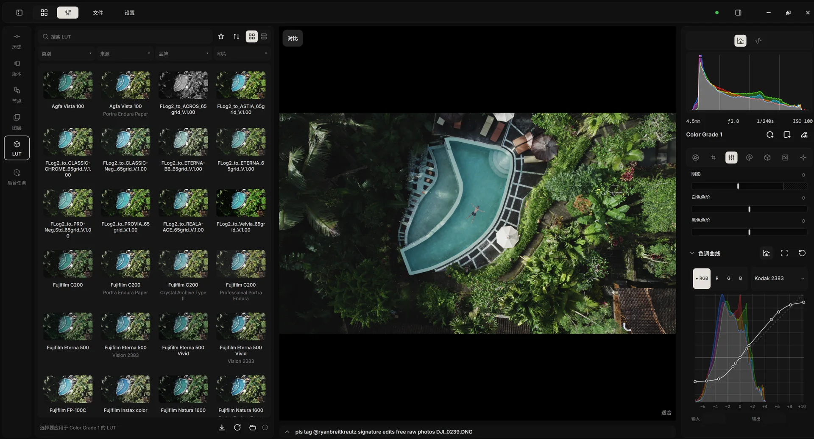
- 胶片 LUT
- Spectral Film LUT 和 spektrafilm 两个 LUT 包，共 113 款。在“设置 > LUT”中下载，安装前校验签名。
- 自己的 LUT
- 用户 LUT 文件夹中的 .cube 文件归入“User”分类，嵌套文件夹中的 LUT 也会被找到。
- 编码
- 每个 LUT 的输入和输出可以选择 50 种场景编码和显示编码，例如 ACES、ARRI LogC3 和 LogC4、Canon Log、Fujifilm F-Log 和 F-Log2 C、Panasonic V-Log、Nikon N-Log、Apple Log 和 Apple Log 2、DaVinci Intermediate、Cineon、sRGB、BT.1886、PQ 和 HLG。
- 输出显示编码的 LUT
- LUT 输出显示编码时，ACES 2.0 逆输出变换把结果带回场景空间。
- 记住编码
- Alcedo 可以为某个 LUT 保存编码组合，复制调整时一并带上。
- LUT 浏览器
- 网格或列表。按分类、来源、品牌和印片筛选。网格卡片在当前照片上预览每个 LUT。强度 0 至 100%。
- 颗粒
- 基于 Realistic Film Grain Rendering（IPOL 2017）。强度 0 至 200%，缩放时颗粒尺度不变。
- 光晕
- 高反差边缘周围的红色光晕（Halation）。
- 黑柔滤镜
- 明亮光源泛起柔和光晕，中间调细节保持清晰。
渲染引擎#
编辑在 GPU 上以 32 位浮点的计算图运行。拖动时预览实时更新，松开后渲染完整画质。
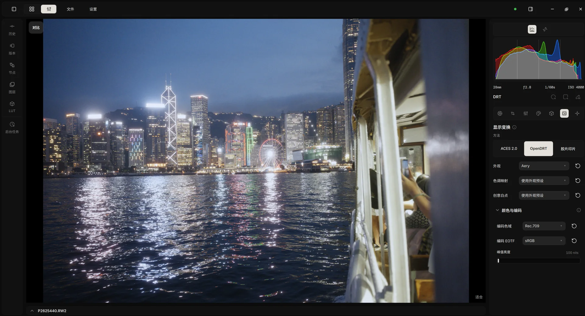
- Windows
- 计算能力 6.0 及以上的 NVIDIA GPU 使用 CUDA，其他 GPU 使用 OpenCL。
- macOS
- Apple Silicon 上使用 Metal。
- 缓存
- RAW 解码和几何处理的结果按版本号缓存。Color Grade 节点在每次修改时重新计算。
- 显存
- Color Grade 节点交替写入两块 RGBA32F 缓冲区，显存不随节点数量增长。去马赛克、高光重建和局部色调映射共用一个内存池，渲染结束后释放。
- 预览尺寸
- 拖动时长边 2560 像素，静止时 4096 像素。放大时只渲染可见区域，按 1:1 显示。
- 同一条管线
- 预览、缩略图、分析和导出使用同一条管线。缩略图和导出使用独立的 GPU 资源，不会拖慢预览。
- 示波器
- 直方图和 RGB 波形图，通道填充显示并标出溢出。
图库#
图库是保存在一个项目文件中的 DuckDB 数据库。
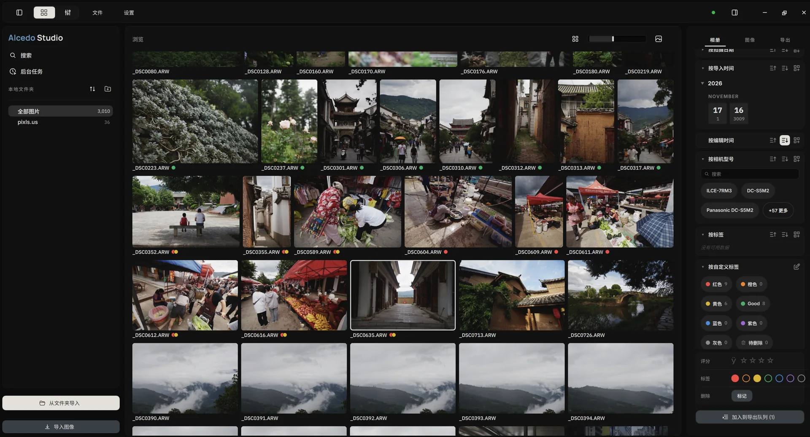
- 项目文件
- 一个 .alcd 文件保存文件夹结构、元数据、搜索索引和每张照片的完整编辑历史。备份图库只需复制这个文件。数据库超过 2 GiB 的项目可以打开，保存时分块写入数据库。
- 导入
- RAW、JPEG、PNG、TIFF 和 OpenEXR。每个文件夹可以选择导入的文件类型，按文件内容识别格式。
- 拖拽导入0.3.6
- 把文件或文件夹拖到图库或影集上即可导入。
- 布局0.3.6
- “自适应行”布局每行等高，保持每张照片的原始比例，悬停时显示相机、曝光参数、日期、标签和星级。在“设置 > 语言/主题”中可以切换到“经典网格”。
- 相册检查器
- 按日期、相机、镜头、标签和评分分组，选中分组即可筛选。各部分可以折叠，相机、标签和镜头部分有搜索框。
- 影集
- 层级影集以树形显示。就地新建和重命名，拖动移动，显示照片数量。
- 星级和标记
- 照片卡片显示星级和编辑标记。较大的卡片可以点击星星评分。
- 颜色标签0.3.6
- 七种可自定义名称的颜色标签，以及待删除标记。通过“按自定义标签”筛选。在检查器中为整个选区设置标签、待删除标记和星级。
- 排序与分组
- 按任意字段、导入日期、拍摄时间或最后编辑时间。分组可以折叠和展开。
- 拍摄热力图
- 一年的拍摄活跃度，点击某一天即可筛选。
- 速度0.3.6
- 在 2,943 张照片的图库中，自适应行布局滚动一格用时 4.6 ms，缩放后恢复已缓存缩略图用时 3 ms。
搜索与 AI 标签#
所有搜索都在你的电脑上进行。
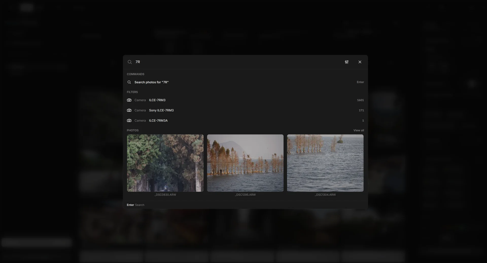
- 元数据搜索
- 相机、镜头、日期、ISO、焦距、光圈、快门速度和评分，可以任意组合。
- 搜索词
- “6.7”识别为 6 月 7 日；“iso800”不匹配 ISO 8000；“dng”识别为文件类型。多个搜索词需要同时满足。
- 自然语言搜索
- 本地多语言 CLIP 模型和 HNSW 向量索引。在“设置 > AI 模型”中下载并启用。
- AI 标签0.3.6
- 标签由相机内嵌预览生成，速度约为 0.3.5 的 16 倍，在 RTX 3080 Laptop GPU 上每秒 131 张。生成标签期间编辑器释放 GPU 显存。
- 搜索面板
- 最近搜索、命令、筛选项和照片预览集中在一个窗口，按 Enter 将搜索应用到图库。
- 搜索速度
- 在两万张照片的图库中，输入时预览约 12 ms，应用搜索 13 至 21 ms，均在后台线程运行。
历史与版本#
每次调整都是类似 Git 的历史中的一步，历史保存在项目文件中。
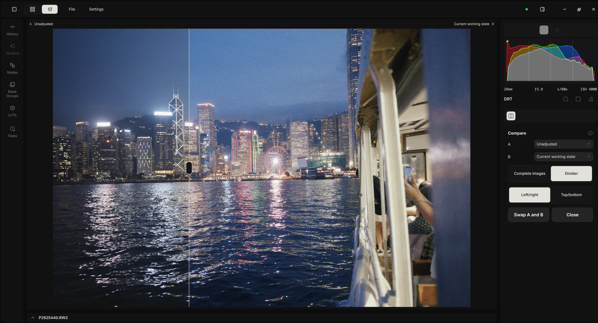
- 版本
- 每张照片可以有多个命名版本，可以从历史中的任意一步分出新版本。
- 撤销
- 历史保存在项目中，重启后仍然可以撤销。
- 前后对比
- 比较修改前后或两个版本。并排或分割线，左右或上下布局。
- 复制调整
- 复制完整的 Look，或只选择版本、节点或单项参数，包括 RAW 解码、白平衡、镜头校正和裁剪。粘贴到多张照片时在后台运行。
- 快捷键
- 可以自定义键盘快捷键，并检查冲突。
导出#
导出与预览使用同一条管线。
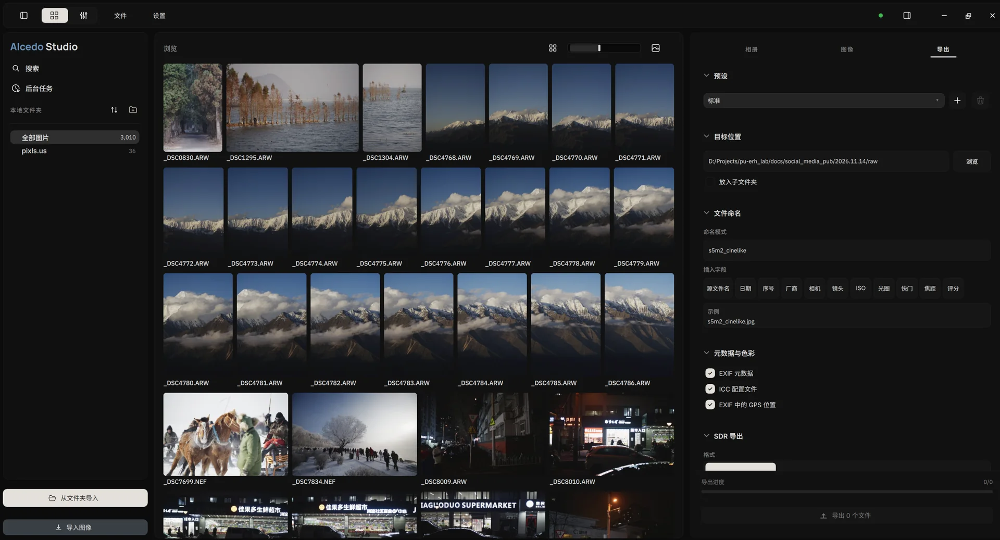
- 格式
- JPEG 8 位、PNG 8 或 16 位、TIFF 8、16 或 32 位、OpenEXR 16 或 32 位浮点，以及 Ultra HDR JPEG。
- 预设
- 标准、网页、社交媒体、电子邮件、最高质量 JPEG、16 位 TIFF 和 EXR 存档，也可以保存自己的预设。预设设置除导出位置以外的所有选项。
- 尺寸
- 原始尺寸、长边、边界框，或打印尺寸和 DPI。
- 文件名
- 源文件名、日期、相机、镜头、光圈、快门速度、ISO、评分和序号。
- 元数据
- EXIF、ICC 配置文件和 GPS 定位可以分别选择保留或去除。相机和镜头序列号以及编辑历史从不写入。
- 导出队列
- “加入到导出队列”会打开导出标签页。导出过的照片可以再次加入队列。
- 导出位置
- 记住上次的导出文件夹，重启后仍然有效。
alcedo-cli 与 AI 智能体#
alcedo-cli 随 Alcedo Studio 一起安装，界面中的每个操作都有对应的命令。脚本、终端和 Claude Code、Codex 等 AI 智能体都可以使用它。命令参考（英文）。
- 项目与图库
- 创建、打开和保存项目。导入文件夹。列出、评分、加标签、选择和删除照片。读取元数据和缩略图。搜索，包括自然语言搜索。
- 编辑
- 打开照片。读取和设置任意调整，或一步设置多项。编辑节点和 LUT。列出胶片印片的胶片。撤销、重做和读取历史。
- 版本
- 创建、分支、切换、重命名和删除版本。在照片之间复制和粘贴调整。
- 输出
- 渲染预览，按导出面板的选项导出，并跟踪后台任务直到完成。
- 会话
- 无窗口会话在后台运行，适合批量任务。智能体也可以在你正在使用的窗口中工作。
- 控制权
- 智能体在你的窗口中工作时，编辑控件锁定，平移、缩放和示波器仍然可用。点击“停止”立即结束它的控制。
- 历史
- 智能体的编辑在历史中标出，并显示它留下的说明。撤销方式与你自己的编辑相同。
- 数据格式
- 命令的输入和输出都是 JSON。
alcedo-cli schema列出每个命令的参数和结果。 - Alcedo 技能
- zidage/alcedo-skills 中的 alcedo 技能教智能体使用这些命令，并按“预览、观察、调整”的循环工作。在 Claude Code 中运行
/plugin marketplace add zidage/alcedo-skills和/plugin install alcedo@alcedo-skills即可安装。
AI 模型#
AI 模型在你的电脑上运行。在“设置 > AI 模型”中下载，每个模型显示许可证、大小和下载进度。
- AI 蒙版
- SAM 2.1（Hiera tiny）用于点选、路径和框选。S3OD（图像编码器为 DINOv3）用于主体。
- 搜索与标签
- 多语言 CLIP 模型。
- 加载
- 工具需要时才加载模型。
- 天空模型
- 训练数据的许可证不明确，商业使用前请查看模型信息。
应用#
应用的通用功能。
- 界面语言
- 英文和简体中文。
- 欢迎页
- 最近的项目以预览显示，包括前几张照片组成的封面、照片数量、已编辑照片数量和拍摄日期范围。
- 后台任务
- 顶部工具栏中的状态灯在有任务运行或出错时展开。点击状态灯可以展开或收起。
- 日志
- “设置 > 关于”可以打开日志文件夹，旧的日志会话会自动清理。
系统要求#
Alcedo Studio 支持 64 位 Windows 和 Apple Silicon Mac。
- Windows
- Windows 10 或 11，x64。CUDA 需要计算能力 6.0 及以上的 NVIDIA GPU，其他 GPU 使用 OpenCL。
- macOS
- macOS 13.3 或更高版本，Apple Silicon（M1 或更新），使用 Metal。
- 内存
- 至少 8 GB，大型图库建议 16 GB 或以上。
- 应用内下载
- AI 模型和胶片 LUT 需要在“设置”中单独下载。
- 升级到 0.3.6
- 在旧版本中用阴影、高光、白色色阶、黑色色阶或色调曲线编辑过的照片，打开后观感可能不同。0.3 无法打开 0.2.9 及更早版本的项目。
开源组件#
Alcedo Studio 以 GPL-3.0-only 许可证发布，使用了以下项目。完整列表和许可证见 THIRD_PARTY_NOTICE.txt。
- RAW 与元数据
- LibRaw、Lensfun、Exiv2。
- 图像与数据
- OpenImageIO、OpenCV、OpenColorIO、DuckDB。
- 界面
- Qt、QuickQanava。
- 色彩
- ACES 2.0 输出变换（aces-core）、Jed Smith 的 OpenDRT、rawtoaces-data。
- 胶片
- Jan Lohse 的 spectral_film_lut、Andrea Volpato 的 spektrafilm、fotufilm-engine、Realistic Film Grain Rendering（IPOL 2017）。
- AI
- SAM 2.1、S3OD、DINOv3、CLIP。
- 去马赛克
- Luis Sanz Rodríguez 的 RCD、DemosaicNet（Gharbi 等，2016）。
- 高光重建
- darktable、RawTherapee。
- 商标
- ACES 是美国电影艺术与科学学院（A.M.P.A.S.）的商标。Alcedo Studio 是独立项目，与 A.M.P.A.S.、Academy Software Foundation、Jed Smith 以及本页提到的其他作者均无关联，也未获得其背书。Kodak、Fujifilm 等胶片名称是其所有者的商标，仅用于标明胶片印片所模拟的胶片。
照片署名#
本站的背景是 Alcedo Studio 编辑器的截图。来自 discuss.pixls.us 的照片以 CC BY-SA 4.0 许可使用，展示这些照片的截图同样以该许可共享。
- Arches National Park (Utah, USA)
- 作者 LaurentFromSF，discuss.pixls.us，CC BY-SA 4.0。
- 日落时的峡谷
- 作者 jeremyrh，discuss.pixls.us，CC BY-SA 4.0。
- Aqueduct in the Bergpark
- 作者 mino，discuss.pixls.us，CC BY-SA 4.0。
- LUT 浏览器
- 照片由 Ryan Breitkreutz（@ryanbreitkreutz）拍摄，来自 Signature Edits 免费 RAW 照片。
- 其他照片
- 由 Alcedo Studio 开发者拍摄。